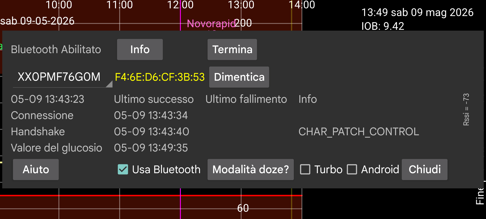

Lo spinner contiene il nome del sensore. Se Juggluco sta usando più di un sensore contemporaneamente, puoi selezionare il sensore di cui mostrare le informazioni.
Doze mode ti porta a una schermata con informazioni su come disabilitare le ottimizzazioni della batteria per Juggluco, che possono impedire a Juggluco di funzionare.
Cronologia Bluetooth: Su Libre 2, i valori della cronologia sono letture passate distanziate di 15 minuti. In precedenza erano ricevute solo tramite scansione. Quando attivi questa opzione, i valori della cronologia sono ricevuti anche tramite Bluetooth. Inoltre, altre cose funzioneranno diversamente. Juggluco invia quindi a LibreView i valori della cronologia, invece delle medie dei valori del flusso. Lo svantaggio è che è più lento. Questo può essere un problema sugli orologi WearOS. Questa opzione non ha effetto su Libre 3 e sui sensori US/CA/AU/KR Libre 2; ricevono sempre i valori della cronologia tramite Bluetooth.
Bug: presente solo su WearOS per Libre 3. Deve essere impostato su Samsung Galaxy Watch 5 e successivi, finché Samsung non corregge questo bug. Senza questa opzione, i valori del glucosio saranno ricevuti distanziati di 2 minuti invece di 1. I Samsung Galaxy Watch dal 5 all'Ultra ricevono sempre i valori Libre 2 distanziati di due minuti.
⏰: Fa usare a Juggluco una funzione di sveglia per garantire il corretto timing della connessione ai sensori Dexcom G7 e ONE+. Senza di esso, quando il dispositivo è in deep sleep mentre non è utilizzato, a volte non si sveglierà per riconnettersi al sensore e non riceverà immediatamente un valore del glucosio. (Il mio orologio WearOS aveva questo problema nel mezzo della notte, probabilmente perché mi muovevo molto poco. A causa del backfill successivo e del lento risveglio, non lo vedevo sull'orologio e sul telefono, solo nei file di log. Il mio telefono non ha bisogno di questa impostazione e sembra funzionare peggio quando è attivata.)
Permesso: Prima di Android 12 era necessario il permesso di posizione per cercare dispositivi Bluetooth. Android 12 e successivi hanno un permesso Dispositivi vicini necessario per ogni contatto con dispositivi Bluetooth.
L'indirizzo del dispositivo, se noto, viene mostrato dopo l'identificatore del sensore. Rosso indica un sensore di tipo statunitense.
Dimentica: Fa dimenticare a Juggluco l'indirizzo del dispositivo e cerca l'indirizzo del dispositivo. Per alcuni sensori questo è necessario per ottenere una connessione e viene quindi fatto automaticamente da Juggluco. Con questo pulsante puoi dire manualmente che Juggluco deve farlo, perché potrebbero esserci altre occasioni in cui è anche necessario.
Termina: smetti di connetterti a questo sensore tramite Bluetooth. Se in seguito vuoi nuovamente ricevere i valori del glucosio del flusso da questo sensore, devi solo scansionarlo o toccare "Attiva" in info sensore.
Disaccoppia: I sensori Linx/Lumiflex/Aidex X ricordano il telefono o l'orologio con cui sono accoppiati e si rifiutano di accoppiarsi con altri dispositivi. Premendo "Disaccoppia" viene inviato un comando al sensore e se ha successo, è di nuovo possibile per altri telefoni o orologi connettersi al sensore. Quando usi menu sinistro→Orologio→Config WearOS → "Sensore diretto …" per trasferire il sensore da e verso l'orologio, verrà eseguito anche il disaccoppiamento, e non dovresti usare "Disaccoppia".
Cancella: (Pulsante presente solo quando ci si connette
con sensori Linx/Lumiflex/Aidex X.) Premendo questo pulsante
vengono rimossi tutti i valori del glucosio dal sensore e il
sensore viene riavviato come se fosse un nuovo sensore. Questo
rende possibile usare un sensore per più di 15 giorni. Quando l'ho
provato, i valori ricevuti dopo la data di fine del sensore erano
totalmente inutilizzabili, avendo circa la metà del valore del
sensore Libre 3 che ho fatto correre in parallelo. Se dopo qualche
settimana, cancelli una seconda volta, i valori del glucosio che
fornisce diventano nuovamente molto peggiori di prima (nel mio
caso molto bassi). Non sembra essere il maggior uso del sensore,
ma la cancellazione il problema.
La cancellazione comporta molte ricerche di dispositivi bluetooth.
Il numero di volte che un'app è autorizzata da Android a cercare
dispositivi entro un certo periodo di tempo è limitato. Se ne fa
di più, Android scarta semplicemente la richiesta. L'unica cosa
che puoi fare è disattivare e riattivare il Bluetooth, che
ripristina questo conteggio.
Reset: Solo Sibionics 2. Quando si cambia sensore in un trasmettitore questo pulsante deve essere premuto. O quando Juggluco è connesso al vecchio sensore e/o quando Juggluco è connesso al nuovo sensore. Non dovresti premerlo quando il trasmettitore è già stato resettato da un'altra app.
Turbo: Aumenta lo sforzo speso per contattare il sensore, nella speranza di avere meno errori di connessione. Può consumare più batteria. Sembra necessario su Watch4 con sensori Freestyle Libre 2, ma non con sensori Freestyle Libre 3 e su nessuno degli smartphone su cui l'ho provato.
Android: Fa fare ad Android invece che a Juggluco la connessione con il sensore. Non usarlo! Nella maggior parte dei casi ci vorrà più tempo prima che venga stabilita una connessione. Questa opzione è stata aggiunta per aggirare un bug in una release di Android 13, che è stato da allora corretto. Dovresti attivarlo solo quando in questa schermata del sensore non vengono mostrati orari recenti. Ciò significa che non vengono mostrati errori di connessione o errori del sensore, ma anche che non vengono ricevuti valori e puoi farlo funzionare nuovamente disattivando e riattivando il Bluetooth. Connettere un sensore Libre 2 europeo a due app sullo stesso telefono simultaneamente (cosa possibile solo per quella variante) può anche produrre questo stato.
Info: Fornisce gli orari di inizio e fine e gli ultimi orari di scansione e flusso del sensore.
Per connettersi a un sensore FreeStyle Libre 2 tramite Bluetooth Low Energy, il Bluetooth deve essere attivato. Non succede nulla finché il sensore non è stato scansionato con successo da questa app. Il sensore non deve essere connesso a un lettore FreeStyle o ad altre app sugli smartphone. L'app LibreLink di Abbott deve essere disinstallata, disabilitata o forzata a fermarsi. Se hai avviato il sensore con Freestyle Reader e non puoi spegnerlo, puoi impedirgli di entrare in contatto con il sensore mettendo il reader in una gabbia di Faraday.
Usa Bluetooth dovrebbe essere attivato.
Se le condizioni di cui sopra sono soddisfatte, può ancora volerci molto tempo prima che l'app riceva i valori del glucosio dal sensore. Spesso ci vuole un minuto, ma altre volte ci vuole molto più tempo. La fase di Connessione dà le maggiori difficoltà. I più frequenti sono i fallimenti con status=133, che è l'argomento status di onConnectionStateChange(BluetoothGatt bluetoothGatt, int status, int newState). Significa Dispositivo Bluetooth non trovato. Quasi sempre ci vuole solo un po' di tempo prima che il dispositivo venga trovato. È anche possibile che il sensore sia connesso a un altro dispositivo, temporaneamente non funzionante bene, altri dispositivi stiano interferendo o il Bluetooth di Android non funzioni. A volte disattivare e riattivare il Bluetooth sembra aiutare o riavviare il telefono o disattivare la connessione Bluetooth di altri dispositivi. Altri problemi a volte si risolvono scansionando il sensore. L'acqua di mezzo (compresa l'acqua corporea) può essere un problema, quindi indossare un orologio WearOS su un braccio diverso da quello del sensore può dare problemi di connessione quando le braccia sono tenute in modo che il corpo sia posizionato tra orologio e sensore.
Un utente Accu-Chek SmartGuide ha riferito che quando una ricerca Bluetooth non riusciva a trovare il sensore, la soluzione era andare in Dispositivi connessi nelle impostazioni Android, selezionare il sensore e toccare Dimentica.
Scansionare un sensore Libre con Juggluco (con Usa Bluetooth abilitato) su un altro telefono, ruberà la connessione da questo telefono, e ci può volere un po' di tempo, con scansioni nel mezzo, per riaverla indietro.